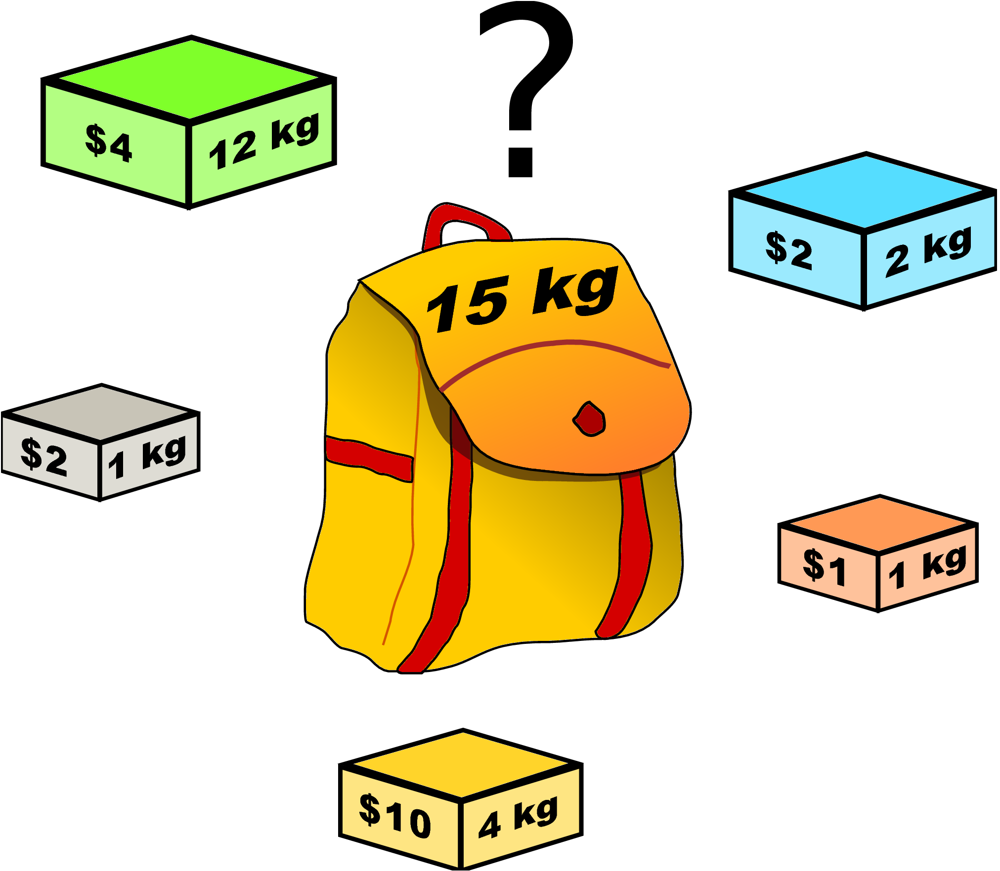

Introduction
 Dans ce document, on s'intéresse à une classe de problèmes d'optimisation connus sous le nom général de « problème du sac à dos ». On peut définir ce problème de la manière suivante : *« durant un cambriolage un voleur possède un sac dont la capacité (en poids par exemple) est limitée. Il se trouve face à un ensemble d'objets qu'il veut dérober. Chacun de ces objets est caractérisé par sa valeur et son poids. Le voleur souhaite optimiser la valeur totale des objets qu'il dérobe tout en ne dépassant pas le poids maximal supporté par son sac ».*Ce problème est une abstraction pour un grand nombre d’autres problèmes d’optimisation. Il a été utilisé en cryptographie comme base pour différents schémas de chiffrement1. Il faut cependant noter que la plupart de ces schémas de chiffrement ne sont plus actuellement considérés comme sûrs. ^1, il est utilisé lors du chargement des bateaux ou d’avions, lors de la découpe de matériaux (minimisation des coupes « chutes » lors de la découpe), etc.
Problème étudié
On considère un sac à dos de masse maximale $m = \pu{40 kg}$ dans lequel on souhaite ranger les objets dont les caractéristiques sont données ci-dessous :
| Objet | A | B | C | D | E | F |
|---|---|---|---|---|---|---|
| Masse | 13 | 12 | 8 | 10 | 14 | 18 |
| Valeur | 700 | 500 | 200 | 300 | 600 | 800 |
Quels objets faut-il sélectionner de façon à ce que la valeur totale, dans le sac à dos, soit maximale ?
Méthode de résolution approchée : stratégie gloutonne
- Rappeler ce qu’est une stratégie gloutonne.
Réponse
Les algorithmes gloutons forment une catégorie d’algorithmes permettant de parvenir à une solution pour un problème d’optimisation qui vise à maximiser/minimiser une quantité (plus court chemin (GPS), plus petite durée d’exécution, meilleure organisation d’un emploi du temps, etc.)
Le principe d’un algorithme glouton est le suivant :
- Résoudre un problème étape par étape ;
- À chaque étape, faire le choix optimal de moindre coût (de meilleur gain).
Le choix effectué à chaque étape n’est jamais remis en cause, ce qui fait que cette stratégie permet d’aboutir rapidement à une solution au problème de départ. C’est en ce sens que l’adjectif greedy (glouton/avare) caractérise cet algorithme : il se termine rapidement (glouton) sans fournir beaucoup d’efforts (avare).
-
Importer les types
List,DictetTupledu moduletyping. -
Dans la fonction
main, définir la liste objets dont les membres sont des dictionnaires représentant les différents objets du problème.
Chacun de ces dictionnaires doit donc posséder les clésnom,masse,valeurassociées aux valeurs.
Solution
|
|
- Dans la fonction
main, définir la variablemasse_maxet lui affecter la valeur 40.
Solution
|
|
Le principe de la stratégie gloutonne consiste à ajouter en priorité les objets « les plus efficaces ». « Plus efficace » ne signifie pas « plus grande valeur » mais « plus grande valeur comparativement à la masse ».
Avant d’appliquer l’algorithme glouton, il est nécessaire de trier la liste objets. Définir la fonction suivante :
|
|
- Quel concept propre à la programmation fonctionnelle la fonction
sortedmet-elle en œuvre ?
Solution
Une fonction en Python peut être passée comme argument à une autre fonction.
-
Décrire précisément la structure et le comportement de la fonction
tri_objets. -
Affecter, dans la fonction
main, le résultat de l’appel de la fonctiontri_objetsà la variableobjets.
Afficher à l’écran la liste triée.
Solution
|
|
- Remarque.
- Ne pas oublier d’appeler la fonction main.
- Définir la fonction
construction_sac_a_dosdont la spécification est :
|
|
Solution
|
|
- Affecter, dans la fonction
main, le tuple retourné par la fonction construction_sac_a_dos aux variables sac_a_dos, valeur et masse_sac.
Solution
|
|
- Afficher le résultat :
|
|
Méthode de résolution exacte
Si on ne prend pas en compte, dans un premier temps, les contraintes, il est possible d’établir la liste des combinaisons possibles des objets à l’aide d’un arbre d’exploration binaire.
Par exemple, voici ce à quoi cet arbre ressemble lorsqu’on prend en compte les trois premiers objets :
graph TD
V("" ) --> A
V --> V1(" ")
A --> C("A,B")
C --> D("A,B,C")
C --> E("A,B")
A --> F("A")
F --> G("A,C")
F --> H("A")
V1 --> I("B")
I --> J("B,C")
I --> K("B")
V1 --> V2(" ")
V2 --> L("C")
V2 --> M(" ")
Les combinaisons s’obtiennent en parcourant l’arbre du sommet jusqu’à chaque extrémité : on obtient alors un vecteur dont on peut calculer la poids et la valeur. Il suffit alors de retenir celui dont la masse est inférieure à la masse maximale et dont la valeur est alors maximale.
- Au niveau de chaque nœud à quoi correspond le chemin « gauche » : objet retenu ou objet non retenu ?
Réponse
Objet retenu.
-
Compléter l’arbre avec l’objet D.
-
Si on implémente un algorithme mettant en œuvre la technique présentée ici, on trouve comme solution [A,C,F]. Vérifier que cette solution est meilleure que celle donnée par l’algorithme glouton.
Pourquoi cette méthode n’est cependant pas utilisable la plupart du temps ? Quel est le nombre de combinaisons possibles ?
Réponse
Le nombre de combinaisons est $2^n$ où $n$ est le nombre d’objets. Cette croissance exponentielle rend l’algorithme exact beaucoup trop lent.
- Écrire le code de la fonction
masse_sacdont la spécification est :
|
|
- Écrire le code de la fonction
calcul_valeur_sacdont la spécification est :
|
|
- Écrire le code suivant :
|
|
Examiner cette fonction